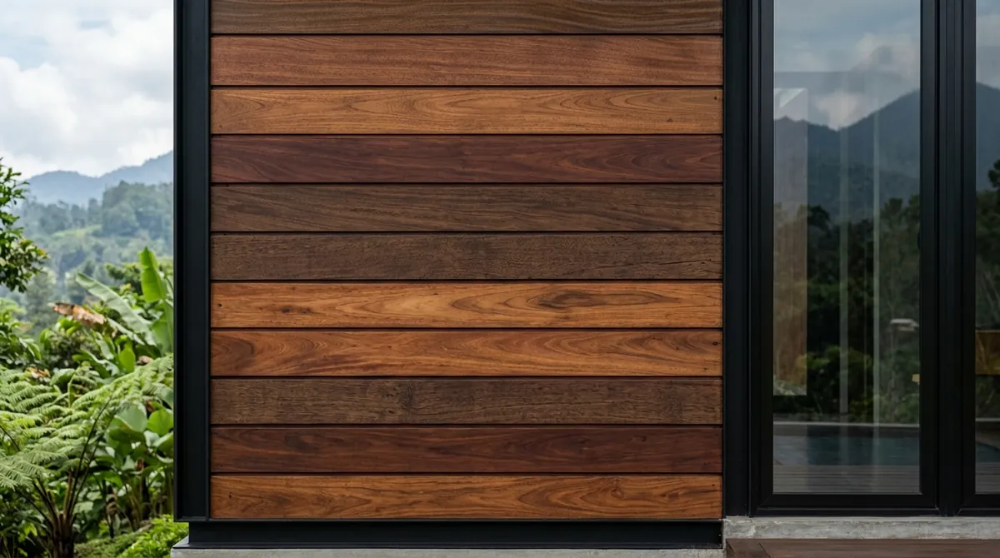

Ringkasan Inti
- Kayu merbau dan ulin menjadi pilihan populer untuk fasad villa modern tropis di kawasan Batu.
- Kelembapan tinggi khas iklim pegunungan membutuhkan jenis kayu dengan daya tahan air yang baik.
- Perawatan berkala tetap diperlukan meski menggunakan kayu dengan ketahanan cuaca ekstrem yang baik.
- Arsitek mempertimbangkan orientasi fasad terhadap arah hujan sebelum menentukan jenis dan penempatan kayu.
Daftar Isi Artikel
Arsitek Batu modern tropis villa umumnya merekomendasikan kayu merbau atau ulin untuk fasad villa karena tahan terhadap kelembapan tinggi khas iklim pegunungan.
Jenis Kayu Apa yang Tahan Cuaca Ekstrem untuk Villa di Batu?
Jenis kayu yang tahan cuaca ekstrem untuk villa di Batu umumnya memiliki kepadatan tinggi dan kandungan minyak alami yang membantu menahan kelembapan tinggi khas iklim pegunungan.
Beberapa jenis kayu yang direkomendasikan untuk villa di Batu:
- Kayu merbau, dikenal memiliki ketahanan tinggi terhadap kelembapan dengan warna kemerahan yang menambah kesan mewah pada fasad villa.
- Kayu ulin, sangat tahan lama dan cocok untuk area yang sering terpapar hujan langsung khas kawasan pegunungan.
- Kayu bengkirai, menjadi alternatif dengan harga lebih terjangkau namun tetap memiliki daya tahan yang baik terhadap cuaca ekstrem.
- Kayu jati, meski harganya lebih tinggi, tetap menjadi pilihan premium untuk villa dengan konsep mewah di Batu.

Bagaimana Aplikasi Kayu pada Fasad Villa Modern Tropis?
Aplikasi kayu pada fasad villa modern tropis di Batu perlu memperhatikan proporsi dan teknik pemasangan agar menghasilkan tampilan yang elegan sekaligus tahan terhadap kondisi cuaca setempat.
Cara aplikasi yang umum diterapkan pada villa modern tropis:
- Menggunakan kayu sebagai elemen dominan pada bagian fasad utama untuk memperkuat kesan tropis modern villa.
- Mengombinasikan kayu dengan material batu alam untuk menambah tekstur dan dimensi visual pada fasad.
- Memastikan sistem ventilasi di balik panel kayu untuk mencegah kelembapan terperangkap yang dapat mempercepat kerusakan.
- Menerapkan overhang atap yang cukup lebar untuk melindungi kayu dari paparan hujan langsung.
Catatan Arsitek Malang
Pada kawasan berkabut dan berhawa lembap seperti Bumiaji dan Oro-Oro Ombo Batu, gunakan pelapis kayu berbasis penetrasi minyak (wood oil coating) dengan filter anti-UV dibanding pernis poliuretan film tebal. Pelapis jenis ini memungkinkan pori kayu tetap bernapas dan tidak mudah mengelupas saat terkena perubahan suhu ekstrem siang-malam.
Apa Pertimbangan Arsitek dalam Memilih Kayu Fasad Villa?
Arsitek Batu modern tropis villa mempertimbangkan beberapa faktor teknis dan estetika sebelum merekomendasikan jenis kayu tertentu untuk fasad proyek villa kliennya.
Pertimbangan yang umum dilakukan arsitek:
- Menyesuaikan jenis kayu dengan tingkat kelembapan dan intensitas hujan di lokasi spesifik villa di Batu.
- Mempertimbangkan anggaran klien untuk menentukan proporsi penggunaan kayu premium pada keseluruhan fasad.
- Memastikan kompatibilitas kayu dengan material lain seperti batu alam atau kaca yang digunakan pada villa.
- Memberikan rekomendasi perawatan yang sesuai dengan kondisi iklim pegunungan agar kayu tetap awet dalam jangka panjang.
Bagaimana Cara Merawat Kayu Fasad di Iklim Pegunungan Batu?
Perawatan kayu fasad di iklim pegunungan Batu memerlukan perhatian khusus mengingat tingkat kelembapan yang cenderung lebih tinggi dibanding wilayah dataran rendah.
Langkah perawatan yang disarankan untuk iklim Batu:
- Mengaplikasikan lapisan pelindung kayu yang tahan kelembapan tinggi secara lebih rutin dibanding wilayah dengan kelembapan lebih rendah.
- Memeriksa kondisi kayu secara berkala, terutama setelah musim hujan panjang khas kawasan pegunungan.
- Memastikan sistem drainase di sekitar fasad berfungsi optimal untuk mencegah genangan air yang dapat merusak material kayu.
- Membersihkan lumut atau jamur yang mungkin tumbuh pada permukaan kayu akibat kelembapan tinggi secara berkala.
Memilih material kayu fasad yang tepat untuk villa modern tropis di Batu membutuhkan pertimbangan jenis kayu, teknik aplikasi, dan perawatan berkala yang disesuaikan dengan kelembapan tinggi khas iklim pegunungan. Berkonsultasi dengan arsitek Batu modern tropis villa berpengalaman membantu menentukan kombinasi material yang tepat untuk hasil fasad yang elegan dan tahan lama.
FAQ Seputar Material Kayu Fasad Villa Batu
Apakah kayu merbau cocok untuk semua bagian fasad villa di Batu?
Kayu merbau cocok digunakan pada berbagai bagian fasad, namun area yang paling sering terpapar hujan langsung mungkin membutuhkan jenis kayu dengan ketahanan air yang lebih tinggi seperti ulin.
Berapa lama kayu fasad villa perlu dilapisi ulang di iklim Batu?
Frekuensi pelapisan ulang di iklim Batu umumnya lebih sering dibanding wilayah dataran rendah karena tingkat kelembapan yang lebih tinggi, namun perlu disesuaikan dengan kondisi aktual di lapangan.
Apakah material kayu lebih cocok dibanding batu alam untuk villa di Batu?
Kedua material memiliki keunggulan masing-masing, dan kombinasi keduanya sering menjadi pilihan optimal untuk menghadirkan karakter visual sekaligus daya tahan yang baik.
Konsultasikan Fasad Villa Impian Anda di Batu
Rencanakan villa modern tropis beraksen kayu mewah dan tahan cuaca bersama tim arsitek berlisensi IAI Arsitek Malang.

Naura Regyna Putri
Penulis & Tim Riset Arsitektur Maroon Arsitek Malang, spesialis arsitektur villa kontemporer, material eksterior tahan cuaca, dan sains bangunan iklim pegunungan.